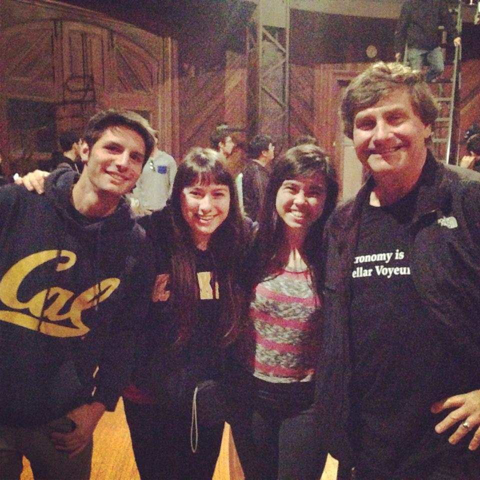

Teaching
Astronomy 98: Python for Astronomers

I currently teach the Astronomy 98 coure commonly known as "The Python Decal" with my co-instructor Chris Agostino. The class is designed to be an introduction into scientific computing in python, with an emphasis on astronomical applications and research. The 2 unit P/NP class was designed to provide a less intimidating environment in which to learn coding, given the rigor and time commitments demanded by the Computer Science department at Cal. This is the second year the decal has been taught, but its structure is based on its sister course, the IDL decal, which has been taught for several years. Typically, IDL runs in the fall, and Python in the spring. The primary goal of the class is to give students a working knowledge of python, and to make them comfortable with the basics of writing programs, loading data, analyzing it, and viewing it. This level of knowledge would allow students to pursue classes like Astro 120 and 121 (lab courses which require extensive python), as well as research positions with faculty in the department.
Because the Decal is often taken by incoming astro-intended freshman, it also serves as a community space for incoming astronomy students to get to know each other, ask questions about being in the major, and develop friendships with the students that will be in their classes for four years. Recently, the department has taken steps to further recognize the importance of the class, and it is now listed as one of the recommended prerequisites for Astro majors to take, as early as possible.
The basic structure of the class is split into three parts: UNIX, Python, and Latex/Html. In the intro to the class, students learn how to interface with command line operating systems, navigate and through and create directories, and handle file systems. Very quickly, we progress through in terminal python usage, and proceed to begin writing standalone programs to read in data, prep it, and view it. We cover several specific astronomical examples which are covered in more detail during Astro 120, such as loading and centroiding spectra, performing fits to data, and working with CCD images from telescopes. As the python part of the course wraps up and students begin working on their final projects, we spend one week each on the LaTeX typsetting language and HTML, giving students the tools to write up a paper, or create a basic research website for themselves. The class meets twice a week, once for lecture, and once for an interactive lab/tutorial where students attempt to follow written guides to write programs and solve astro-related problems. These programs constitute the primary learning in the course, and make up the majority of the students grades.
Undergraduate GSI: Astronomy C10 (Introduction to Astronomy)
[Under Construction!]
with Professor Filippenko